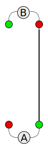
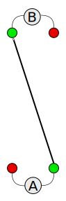
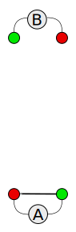
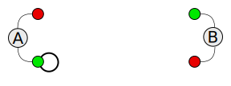

Juggler 4 Fun Passing Patterns
Most the patterns on this site where developed by Dave Davis, Ralph Tippin, Chuck Fernald, and a handful of other folks primarily during some post IJA festival camp-outs between 2002, and 2006. Ralph had placed these patterns on a website he used to maintain but since has dropped from the juggling community and the site went away. Before it did he notified a few of use and copies where make. In 2017 while look for some content to work on to learn web development with I found the files of that site. The HTML used for the site was basic for 2005 and has not faired well with age and the formatting used on the site was inconsistant. So this is an updated and cleaned up version of patterns on that website.
The formatting of the pages was not the only thing that was not inconsistant. The way the patterns where describe also varied a little. To clean this up I formalized a notation to describe the rhythm of a pattern.
Multi-Siteswap terms pattern is used to describe the en, it can mean the physical position of the jugglers, or the count the clubs are passed by. In this document;
- Pattern: the physical positions, and movements, of the jugglers and objects over time.
- Hand: a hand of a juggler. A Hand is a node of the graph
- Rhythm: the sequence of throws among the hands in the pattern.
Multi-Siteswap Notation
I know just what the world needs, yet another juggling notation.
The type of juggling patterns described by this notation are multi-juggler synchronous passing patterns. The problem with trying to use Siteswap to describe these patterns is Siteswap only defines patterns in a single dimension, giving only the magnitude of each throw. Multi-juggler is the same has multi-Siteswap. Thus we need a direction to indicate destination hand has well has a magnitude to define a throw. There are a number of other notations that have addressed this issue however, most of these where developed to solve a computer programming challenge thus suffer from taking some visualization skills to understand, nor are they easy write out by hand (unless you just think that way).
Sequence notation comes from the way most jugglers think about the pattern they are currently throwing. It only addresses the description of the rhythm of the pattern, which is independent of the number of jugglers, the number of objects, the physical location of the jugglers. in the pattern. It is simply a list of the jugglers with a row of that juggler's throws. Jugglers are named using capital letters A through Z in alphabetical order. Throws are defined has a line from the hand making the throw to the hand receiving the throw at a given magnitude.
Throw Notation
The throw consist of 2 parts, magnitude, and direction.
Magnitude
The magnitude is the same has for Siteswap;
- 0 = empty hand
- 1 = hand-across
- 2 = hold
- 3 = normal height pass
- 4 = double height pass
- and so on
Because a magnitude of 3 is the common case, it can be assumed when writing a rhythm
Direction
The direction is defined relative to the current hand and is based in a 2 juggler pattern. In a 2 juggler pattern there are 4 possible directions that a throw can go and each is represented by a single letter;
- P - throw to other juggler’s opposite hand (A straight Pass, right-to-left or left-to-right)

- D - throw to other juggler’s same hand (A Diagonal pass, right-to-right, or left-to-left)

- S - throw to other hand (a Self throw)

- H - throw to same hand (a Heff)

For more patterns with more than 2 Jugglers in the pattern, append the letter of the destination juggler.
This throw notation can be farther simplified because a magnitude of 3 will be the normal, the magnitude value can be dropped. Also, the juggler designation can be dropped
- The number of jugglers
- The initial physical location and orientation of each juggler
- A description of how the jugglers move through the pattern
- The location that each object starts from
- A description of how objects move between hands over time
From the point of view of a juggler in the pattern what you want a list of where each object is at, or where it is going, or where is coming from, at some regular occurring point of time and that is independent of physical location of the hands are traveling between. The most widely known notation Siteswap side steps the issue of physical location a There are a number of parts that work together to fully describe a pattern;
- The topology is the locations of the
In order to fully describe a throw requires a vector, an entity that has both a magnitude and a direction. Siteswap the most well known juggling rhythm notation only gives the magnitude of the throw by defining a 1 dimensional . there
Rhythms
A Sailor
Number of Jugglers: 2
Number of Objects: 6
Start: Two clubs in left hand (left handed start)
| A | Sail- | or | went | to | sea | sea | sea |
| S | D | S | D | S | P | P | P |
| to | see | what | he | could | see | see | see |
| S | D | S | D | S | P | P | P |
| But | all | that | he | could | see | see | see |
| S | D | S | D | S | P | P | P |
| was | the bott- | om of | the deep | blue | sea | sea | sea |
| S | D | S | D | S | P | P | 6P |
Every Other Every Others Feed
Three-Person, 9 Clubs
S - Self
A - Feeder
B - Feedee, to the left of the feeder
C - Feedee, to the right of the feeder
A: PBSPCSPB PBPCPC
B: PASSSPAPASS
C: SSPASSSPAPA
Every Other Every Others Parker 4-3 Feed
Three-Person, 9 Clubs
P - Pass
S - Self
A - Feeder
B - Feedee, to the left of the feeder
C - Feedee, to the right of the feeder
A: PBSPCSPB PBPCPCPBSPCSPBPCS
| PBSPCSPB PBPCPCPBSPCSPBPCS
B: PASSSPAPASSPASSSPASS | PASSSPAPASSPASSSPASS
C: SSPASSSPAPASSPASSPAS | SSPASSSPAPASSPASSPAS
Fast Slow
Two-Person, 6 Clubs
P - Straight Pass
S - Self
D - Diagonal Pass
|
A - Fast Position
B - Slow Position
|
A: PS DS
B: P D
|
Note: A s PSDS takes place during the same time frame as B s PD so A needs to speed up a little (that s why it is called
the fast part) and B needs to slow down a little (hence, the slow position). B s passes should be lofty but still a single
spin.
Fast Slow Slow Fast (and ... Slow Fast Fast Slow)
Two-Person, 6 Clubs
|
P - Straight Pass
S - Self
D - Diagonal Pass
|
A - Fast Slow Slow Fast
B - Slow Fast Fast Slow
|
A: PS DS | S | P D | S | P D | S | PS DS | S |
B: P D | S | PS DS | S | PS DS | S | P D | S |
|
Notes:
-
A s PSDS takes place during the same time frame as B s PD so A needs to speed up a little (that s why it is called
the fast part) and B needs to slow down a little (hence, the slow position). B s passes would be lofty but still
a single spin)
- After the transitional self ( | S | ) it is the Fast Slow pattern on the other side.
- You might also try replacing the transitional self with a Reading Romp.
-
Instead of repeating after finishing, you could switch positions at the end and so on ... Or switch to another pattern
... of course you have to have agreed to what you will switch!?!?
|
No Apparent Reason
Two Person, 6 Clubs
|
P - Straight Pass
D - Diagonal Pass
S - Self
H - Hand Across
|
Right Handed Start
Right Left Left Right Right Left Left Right
A: PD S DDS S PSDS S PPHS PSDS
S PPS S PD S DDS S
B: PSDS S PPHS PD S DDS S PD S DDS S PSDS S PPHS
|
Parker 4-3 (Feedee)
Two-Person, 6 Clubs
P - Pass
S - Self
| A |
PSSSPSS |
PSSSPSS |
| Feeder |
PSPSPPS |
PSPSPPS |
| B |
SSPSSPS |
SSPSSPS |
Parker 4-3 (Feeder)
Two-Person, 6 Clubs
P - Pass
S - Self
PSPSPPS | PSPSPPS
Parker 4-3 Feed
Three-Person, 9 Clubs
P - Pass
S - Self
A - Feeder
B - Feedee to the left of Feeder
C - Feedee to the right of Feeder
B C
A
A: PBSPASPBPAS | PBSPASPBPAS
B: PASSSPASS | PASSSPASS
C: SSPASSPAS | SSPASSPAS
|
Ralph and Bryan s Catalina Three Count Flurry
Two Person, 6 Clubs
P - Straight Pass
S - Self
Right Handed Start
PSSPSSPPSPPS | S | PSSPSSPPSPPS | S |
|
|
Ralph and Bryan s Catalina Three Count Flurry With a Reading Romp Transition
Two Person, 6 Clubs
D - Diagonal Pass
P - Straight Pass
S - Self
Right-Handed Start
PSSPSSPPSPPS | DPPP | PSSPSSPPSPPS | DPPP |
|
Un-Named Reading Pattern #1
Two Person, 6 Clubs
D - Diagonal Pass
P - Straight Pass
S - Self
PPSDSDS | PPSDSDS
Un-named Reading Pattern #2
Two Person, 6 Clubs
D - Diagonal Pass
P - Straight Pass
S - Self
PSSPSPPS | S | PSSPSPPS | S |
Could replace | S | with Reading Romp (DPPP)
Un-named Reading Pattern #3
Two Person, 6 Clubs
D - Diagonal Pass
P - Straight Pass
S - Self
PPDSD | PPDSD
Reading Romp
Two Person, 6 Clubs
D - Diagonal Pass
P - Straight Pass
R - Right Hand
L - Left Hand
RDRPLPRP | LDLPRPLP
Reading Romp Feed
a.k.a Martin Meadows
a.k.a Chuck Fernald s Feedee Response To a Reading Romp Feeder
Three Person, 9 Clubs
|
A: Feeder
B: Feedee, to the left of the feeder
C: Feedee, to the right of the feeder
|
B C
A
|
|
D - Diagonal Pass
P - Straight Pass
S - Self
R - Right Hand
L - Left Hand
|
A: RDBRPCLPBRPC | LDCLPBRPCLPB
B: RDARSLPARS | LSRDARSLPA
C: RSLDALSRPA | LDALSRPALS
|
Three-Count Accommodation
Four Person, 12 Clubs
|
P - Straight Pass
S - Self
|
D C
A B
|
|
A: Three Count
B: Two-Thirds Count
C: Right-Handed Two Count
D: Left-Handed Two Count
|
A: PCSSPDSS
B: SPDPCSPCPD
C: PASPBSPBS
D: SPBSPASPB
|
Turlock Fast Slow
Two-Person, 6 Clubs
|
P - Straight Pass
S - Self
D - Diagonal Pass
|
A - Fast Position
B - Slow Position
|
A: PS DS | S | PS DS | S |
B: P D | S | P D | S |
|
|
Notes:
-
A s PSDS takes place during the same time frame as B s PD so A needs to speed up a little (that s why it is called
the fast part) and B needs to slow down a little (hence, the slow position). B s passes would be lofty but still
a single spin)
- Chuck Fernald notes that it is heplful if the the Slow person start a tad bit earlier.
- After the transitional self ( | S | ) it is the Fast Slow pattern on the other side.
- You might also try replacing the transitional self with a Reading Romp.
-
Instead of repeating after finishing, you could switch positions at the end and so on ... Or switch to another pattern
... of course you have to have agreed to what you will switch!?!?
|
Alternating Box Feed
Four Person, 12 Clubs
|
A and B start feeding ... That is, A feeds C and B (starting with C) and B feeds D and A (Starting with D). After
a complete cycle (two passes), C and D take over feeding.
|
|
A - CSBS CSSS
B - DSAS DSSS
C - ASSS ASDS
D - BSSS BSCS
|
| Once everyone is comfortable with the above try adding Ho-Hos! |
Alternating Box Feed with Ho-Hos on the Diagonal
Four Person, 12 Clubs
|
A and B start feeding ... That is, A feeds C and B (starting with C) and B feeds D and A (Starting with D). It is
a standard two-count feed except after the pass along the diagonal (A and B or C and D) follow with a left pass.
After a complete cycle (two passes and the ho-ho), C and D take over feeding.
|
A - CSBB CSSS
B - DSAA DSSS
C - ASSS ASDD
D - BSSS BSCC
|
|
Note: A Ho-Ho is an extra pass not associated with the base pattern. A Pre-Ho is an extra pass immediately before
a normal pass and a Post-Ho is an extra pass immediately after a normal pass.
|
Alternating Box Feed with Ho-Hos Everywhere
Four Person, 12 Clubs
|
A and B start feeding ... That is, A feeds C and B (starting with C) and B feeds D and A (Starting with D). It is
a standard two-count feed except after each pass follow with a left pass. After a complete cycle (two passes and
the ho-hos), C and D take over feeding.
|
A - CCBB CCSS
B - DDAA DDSS
C - AASS AADD
D - BBSS BBCC
|
|
Note: A Ho-Ho is an extra pass not associated with the base pattern. A Pre-Ho is an extra pass immediately before
a normal pass and a Post-Ho is an extra pass immediately after a normal pass.
|
Alternating Box Feed with Ho-Hos on the Straight
Four Person, 12 Clubs
|
A and B start feeding ... That is, A feeds C and B (starting with C) and B feeds D and A (Starting with D). It is
a standard two-count feed except after the straight pass (A and C or B and D) follow with a left pass. After a complete
cycle (two passes and the ho-ho), C and D take over feeding.
|
A - CCBS CCSS
B - DDAS DDSS
C - AASS AADS
D - BBSS BBCS
|
|
Note: A Ho-Ho is an extra pass not associated with the base pattern. A Pre-Ho is an extra pass immediately before
a normal pass and a Post-Ho is an extra pass immediately after a normal pass.
|
Alternating Triangles
Four Person, 12 Clubs
|
A - Feeder
B - Sub-Feeder
C - Feedee (To the right of Feeder)
D - Feedee (To the left of Feeder
|
B
D C
A |
|
A - CSDS ( A right-handed two-count alternating with C and D )
B - ASAS ( A right-handed two-count always passing
to A )
C - BSSS ( A right-handed four-count always passing to B )
D - SSBS ( A right-handed four-count, starting
with a self, always passing to B )
|
Alternating Triangles with Flips
Four Person, 12 Clubs
|
A - Feeder
B - Feeder
C - Feedee
D - Feedee
|
B
D C
A |
This is the Alternating Triangles pattern but A and B switch every four counts.
|
A - CSDS BSBS
B - ASAS DSCS
C - BSSS SSAS
D - SSBS ASSS
|
Alternating Triangles with Rotations
Four Person, 12 Clubs
This is the Alternating Triangles pattern but now everyone gets to feed. We rotate the feed to the right.
Note:
The feeder for each block is across the top in BOLD
|
A C B D
A - CSDS SSCS BSBS CSSS
B - ASAS CSSS DSCS SSCS
C - BSSS BSAS SSAS DSDS
D - SSBS CSCS ASSS ASBS
|
April's Rotating Triangles of Doom
Four Person, 12 Clubs
This is the Alternating Triangles pattern but now we alternate between flips and rotations.
Note: The feeder
for each block is across the top in BOLD
|
A B D C B A C D
A - CSDS BSBS CSSS SSDS BSBS CSDS SSDS CSSS
B - ASAS DSCS SSCS DSSS DSCS ASAS DSSS SSCS
C - BSSS SSAS
DSDS BSAS SSAS BSSS BSAS DSDS
D - SSBS ASSS ASBS CSCS ASSS SSBS CSCS ASBS
|
Chuck's 4-3-2
Two-Person, 6 Clubs
|
P - Straight Pass
S - Self
|
PSPSPPSPP | PSPSPPSPP
|
Chuck's 4-3-2 Feed
Three Person, 9 Clubs
|
A - BSCSBCSBC | BSCSBCSBC
B - ASSSASSAS | ASSSASSAS
C - SSASSASSA | SSASSASSA
|
Dave's Rotating Triangles of Bliss
Four Person, 12 Clubs
This is an Alternating Triangles pattern suggested by Dave ... Right and Left handed passes. Fast, but not
as much to remember as April's Rotating Triangles of Doom.
|
A - CDBDBCSS
B - SSDACACD
C - DASSABDB
D - ACABSSBC
|
Dave and Ralph's Endless Patter Pattern
Two or More People (People Can Come And Go At Will - And They Usually Do)
Any Number Of Clubs (It Is Important To Have Some Clubs So That People Coming Into The "Pattern" Think That Juggling Will
Be Starting Soon, But Under No Circumstances Should Any Clubs Be Thrown While Doing This Pattern)
|
P - Straight Pass
D - Diagonal Pass (Could Also Mean Double - And Sometimes means Double-Diagonal)
S - Self (or single)
H - Hand Across (also hold, hurry, or hairbrained-idea)
N - Nod (as in agreement - usually by two or more people agreeing to go somewhere else after they realize that the
patter is actually the pattern)
A - Argument (We are not argling!)
NC - Notation Change (It is important to change the meaning of notation in the middle of the conversation)
T - Transition, Taxing, Tempting, ...
|
Right Handed Start (Usually - Sometimes You Can Start In The Middle Of The Pattern and Then You Might Start With The Left
Hand)
Now Try Any Combination Of The Above.
Notes:
Feedee Revolt
Three Person, 9 Clubs
| A is the feeder and is doing a 3-count, feeding B and C starting with B. |
| B and C respond to A's 3-count with additional passes with each other just after either pass with A. |
|
A - BSSCSS
B - ACSSCS
C - SBSABS
|
| After everyone is comfortable with each position try Rotating Revolt. |
Lodi Low-Down
Five Person, 15 Clubs
|
A - BSSSCSSS
B - ASDSDEDS
C - EDESASES
D - SCBSBSBS
E - CSCSSBCS
|
... Then Try Lodi Down-Town
|
A - BSSBCSSC
B - ASDADEDD
C - EDEEASEA
D - SCBSBSBB
E - CSCCSBCS
|
Mildness-Madness
Two-Person, 6 Clubs
|
P - Straight Pass
S - Self
D - Diagonal Pass
H - Hand-Across
|
|
A - PPHS | PPS
B - DDS | DDHS
|
Reversed Rotating Revolt
Three Person, 9 Clubs
| A is the feeder and is doing a 3-count, feeding B and C starting with B. |
| B and C respond to A's 3-count with additional passes with each other just after either pass with A. |
| Now, positions shift (rotate) to the right (counter-clockwise). |
|
A - BSSCSS CBSSBS SCSBCS
B - ACSSCS SASCAS CSSASS
C - SBSABS ASSBSS BASSAS
|
Rotating Revolt
Three Person, 9 Clubs
| A is the feeder and is doing a 3-count, feeding B and C starting with B. |
| B and C respond to A's 3-count with additional passes with each other just after either pass with A. |
| Now, positions shift (rotate) to the left (clockwise). |
|
A - BSSCSS SCSACS CBSSBC
B - ACSSCS CSSASS SASCAS
C - SBSABS BASSAS ASSBSS
|
| After everyone is comfortable with each position try Reversed Rotating Revolt. |
Row Row Row Your Boat
Four Person, 12 Clubs
| Position A |
Position B |
Position C |
Position D |
|
Row, Row, Row Your Boat
PC S S S S S PC S
Gently down the stream.
S S PB S PB S S S
Merrily, merrily, merrily, merrily,
PC S PD S PD S PC S
Life is but a dream.
S S S S S S S S
|
Gently down the stream.
S S PC S PC S S S
Merrily, merrily, merrily, merrily,
PD S PA S PA S PD S
Life is but a dream.
S S S S S S S S
Row, Row, Row Your Boat
D S S S S S D S
|
Merrily, merrily, merrily, merrily,
A S B S B S A S
Life is but a dream.
S S S S S S S S
Row, Row, Row Your Boat
A S S S S S A S
Gently down the stream.
S S D S D S S S
|
Life is but a dream.
S S S S S S S S
Row, Row, Row Your Boat
B S S S S S B S
Gently down the stream.
S S A S A S S S
Merrily, merrily, merrily, merrily,
B S C S C S B S
|
Two Harbor Why
Four Person, 12 Clubs
|
A - DSDSS CSCSS
B - CSASS DSASS
C - BSSSS ASBSS
D - ASBSS BSSSS
|
| Notes: A needs to move a little (rock) to either side of B. All of B's drop-backs should be straight back. |
Veteran's Star
Five Person, 15 Clubs
|
A - DSSCSSBSSCSSDSSESS
B - ESSDSSCSSDSSESSDSS
C - ASSESSDSSESSASSBSS
D - BSSASSESSASSBSSCSS
E - CSSBSSASSBSSCSSDSS
|
Juggle Java Jam
Two Person, 6 Clubs
|
P - Straight Pass
S - Self
D - Diagonal Pass
|
PSSPPSPPDPPP | PSSPPSPPDPPP
|
Alternating Box Feed
Four Person, 12 Clubs
|
A and B start feeding ... That is, A feeds C and B (starting with C) and B feeds D and A (Starting with D). After
a complete cycle (two passes), C and D take over feeding.
|
|
A - CSBS CSSS
B - DSAS DSSS
C - ASSS ASDS
D - BSSS BSCS
|
| Once everyone is comfortable with the above try adding Ho-Hos! |